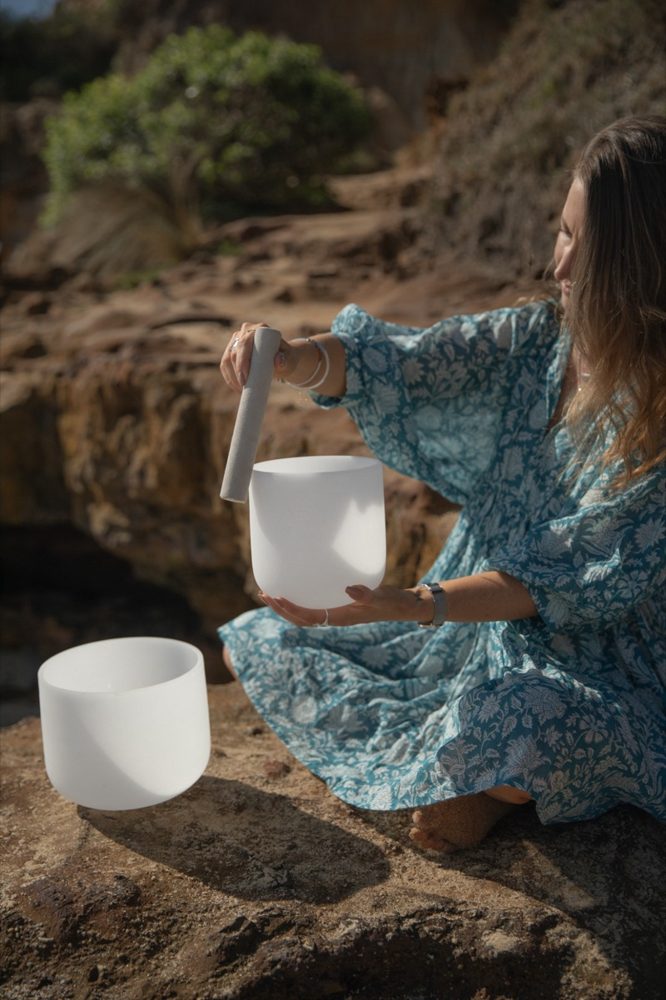

There's something about sound. It gently meets you beneath the surface. Beyond the mind. Beyond the words. Into the body, where everything is felt.
Where it began
My first experience of sound healing was around six years ago, during my Yoga Teacher Training, with Ami from Healing Delight. Something about it stayed with me deeply.
I remember lying there feeling like I had completely dropped in. Beyond thinking, beyond doing, almost journeying somewhere within myself that words couldn't quite explain.
That experience opened something in me. Since then, sound has become a natural extension of the spaces I hold, woven through vinyasa flow, yin, meditation, breathwork and the moments where we simply allow ourselves to receive.

Learning from beautiful teachers
Over the years I've been so grateful to collaborate on many Yin & Sound experiences with Dan Byrne from Cymatic Harmony Academy, while also training and learning with Phoebe at IKSRE.
I completed my Intro to Sound Healing Certification with Phoebe, and I'm now so excited to keep evolving this path as I step into Dan's 3-Day Full Sound Healing Certification with Cymatic Harmony.
This work has expanded my awareness of the power of vibration: how sound can support the nervous system, shift energy, help the body regulate and gently bring us back into harmony. It's where science meets something more subtle, something we feel before we fully understand.
What the science says
Sound healing is still a young field of research, and I always want to be honest about what we know and what we're still learning. But the evidence on sound, music and the nervous system is growing, and some of it is really encouraging.
Source: Goldsby et al., Journal of Evidence-Based Complementary & Alternative Medicine, 2017. An observational study without a control group.
Source: de Witte et al., Health Psychology Review, 2020
Researchers have also studied binaural beats, where each ear hears a slightly different tone and the brain perceives a gentle "beat" between them. A review of 22 studies found a moderate effect on anxiety, attention and pain perception, especially when people listened for longer and before a task.
Source: Garcia-Argibay et al., Psychological Research, 2019
Sound, frequency and your brain
Your brain is always producing rhythmic electrical activity, often described as brainwaves. They tend to shift with how alert or relaxed you are:
- Beta: busy, thinking, doing. Where most of us spend our working day.
- Alpha: calm and relaxed, but awake. That soft, settled feeling.
- Theta: deep relaxation and the dreamy space between waking and sleep, often described in deep meditation.
- Delta: deep, restorative sleep.
Slow, steady sounds like singing bowls, gongs and long resonant tones invite us to slow our breath, soften our attention and move out of "doing" mode. Many people describe drifting into that alpha and theta space: deeply relaxed, yet still aware.
You may also have heard about specific frequencies, like 432 Hz or 528 Hz. These are much loved in the sound healing world, but the research on individual frequencies is still very early, so I share them as an experience to explore rather than a promise. What we do know is that slowing down, breathing deeply and being held in a calm, supported space is powerful medicine for the nervous system.
Why sound and yin belong together
Yin asks us to slow down and stay. Long, supported postures. Stillness. Softening into what's here. Sound meets us right in that stillness and helps carry us deeper.
Together, they create something magical. A space to soften. To release. To rest. To be held in a different way.
This is something I feel deeply passionate about sharing, in a way that feels grounded, accessible and deeply nourishing.
If you've been curious about sound, or you've felt the pull to slow down and reconnect, this is your invitation.
Sound healing is a complementary practice and isn't a replacement for medical or mental health care.